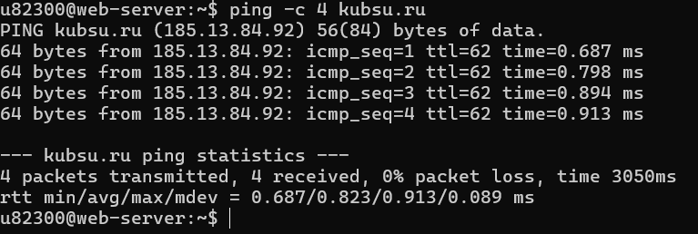
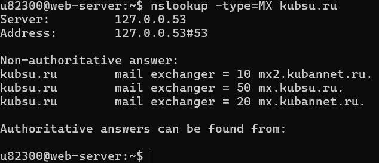
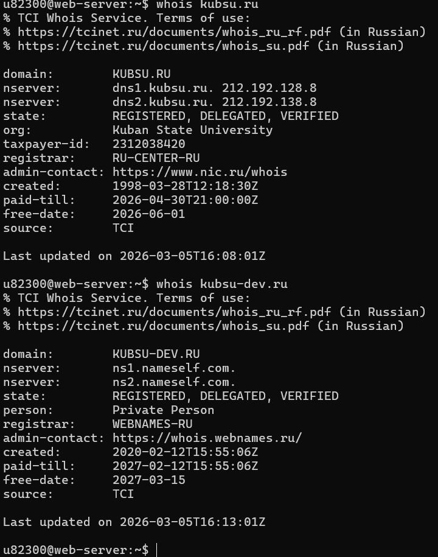

Для выполнения задания я подключилась к серверу через SSH.Вводим свой индекс и пароль
ping kubsu.ru
Команда позволяет определить IP-адрес сервера

Делаем проверку сервера kubsu.ru с помощью команды ping.

Команда позволяет узнать MX (Mail Exchange) записи документа kubsu.ru и kubsu-dev.ru. Она показывает на какие серверы доставляется почта

Для получения информации о домене была использована команда:
whois kubsu.ru
С помощью команды whois была получена информация о регистрации домена, включая дату регистрации и регистратора домена.

Клонирование репозитория с GitHub на сервере с помощбю команды git clone


Для подключения к учебному серверу был использован FTP-клиент FileZilla. В программе были введены данные:
После попытки подключения была получена ошибка соединения, так как сервер доступен только из сети университета.